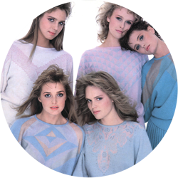
OUR STORY
THE BEGINNING
In the word "Cashmere" is summed up sophistication, elegance and luxury without ostentation.
The challenge is to realize all this in a nice knitted cashmere sweater, keeping the complete production
chain in the same territory where it all started more than 90 years before.
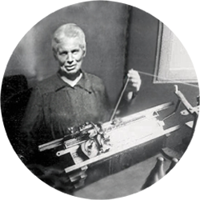
1921
THE BEGINNING
After purchasing a machine Dubied 8/80, Mrs Giulia Allario in Scagliotti starts an artisan production of
knitwear in Roncaglia on the hills of Monferrato
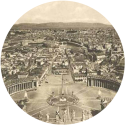
1925
RECOGNITION BY THE VATICAN
Mrs. Giulia produces the purple and ochre silk curtains that will decorate the halls of
the Vatican during the celebrations of the Holy Year
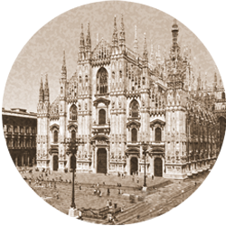
1929
MILAN, INTERNATIONAL TRADE FAIR
12 - 27 April, International Trade Fair, Mrs. Giulia wins the contest "White Ribbon" Dubied
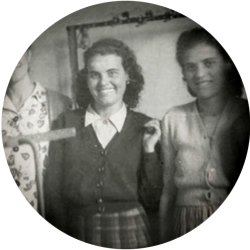
1945
GENERATIONAL SUCCESSION
Iride Ghidella in Scagliotti, daughter in law of Mrs.Giulia continues the family tradition of knitters opening
a small laboratory equipped with machines Santagostino Artiera
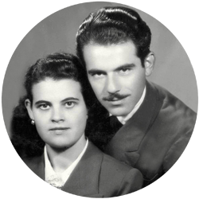
1954
FROM THE HILLS TO THE TOWN OF CASALE MONFERRATO
Iride and Aldo Scagliotti move their activity to Casale Monferrato town
1968
STYLISTIC AND TECHNOLOGICAL REVOLUTION
Luigi, son of Iride and Aldo Scagliotti, who supports parents in their activity, brings fundamental changes and
innovations in the technical and stylistic field and founds the company ALGIS. "Andrè Maurice" brand was born.
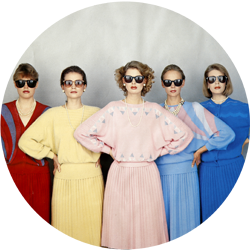
1975
EXPORT BEGINS
Esma Eurotricot International Trade Fair. Algis since then participates in all editions of the fair, being
awarded in 2000 for the fiftieth presence.
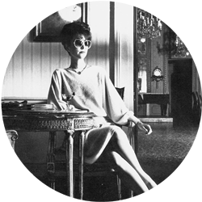
1979
INDUSTRY LEADER
Andrè Maurice is recognized all over Italy as the leading brand in the production of knitwear in angora
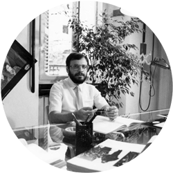
1980
1.000.000
A million pieces of knitwear are produced
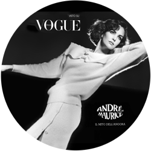
1981
ADVERTISING CAMPAIGN
Advertising campaign on national Tv and magazines
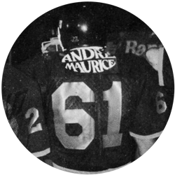
1984
AWARDS
Project of the future "Factory of Cashmere" which started the following year. The production takes an industrial level.
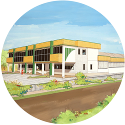
1985
THE FACTORY OF CASHMERE
The turning point was in the early 90s with the use of fiber in "100% Cashmere". Made in Italy knitwear
has now one of the strongest producers of this prestigious yarn.
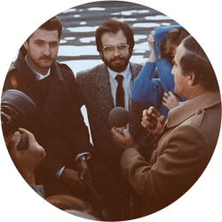
2000
¼ CENTURY AS IMPORTERS OF THIS PRECIOUS FIBER
The 2000s finally consecrate ALGIS SpA as "The Factory of Cashmere", which for more than 25 years
imports cashmere directly from the countries of origin to the factory.
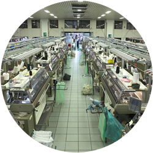
2005
FACTORY AND DIRECT CONSUMERS
Andrè Maurice opens with great success a store directed to the public at its headquarters. The buyer
himself can give testimony that all production is 100% made in Italy and entirely next to the store.
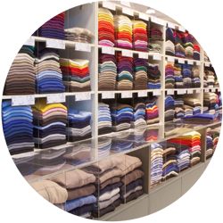
2009
THE SUCCES OF "CASHMERE TOTAL LOO
Andrè Maurice introduces in its own stores the "Cashmere total look". Coats, suits , bags and even shoes.
Once élite product, Cashmere becomes now part of the everyday life of Andrè Maurice consumer.
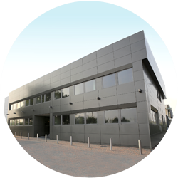
2013
RIGOR AND DEDICATION HANDED DOWN TO THE FOURTH GENERATION
The evolution goes on strongly driven by the new generation of the family that inherits and shares the rigor
and dedication for knittin